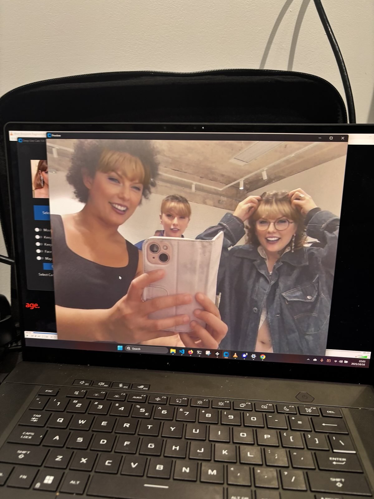
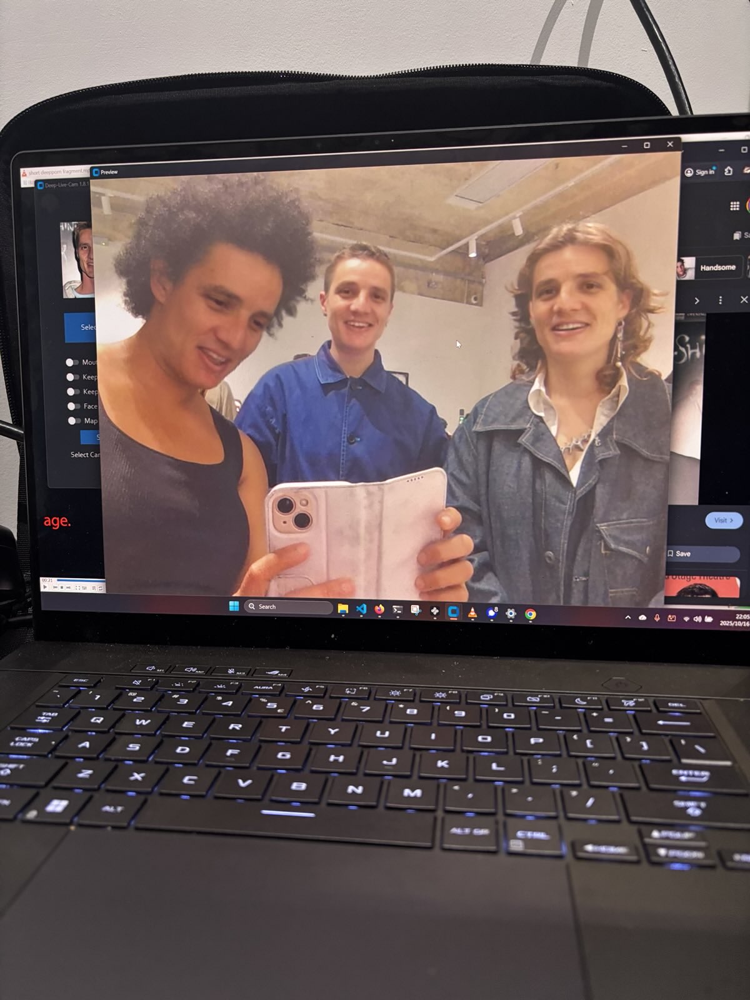
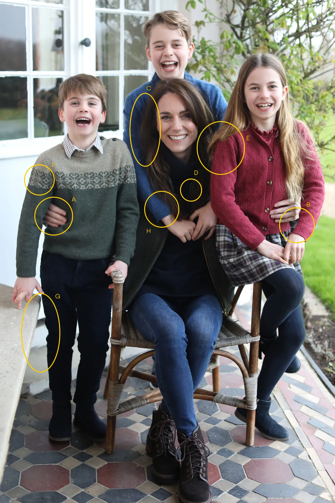
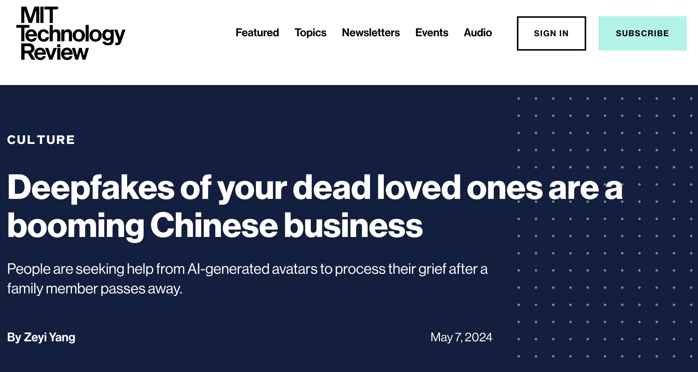
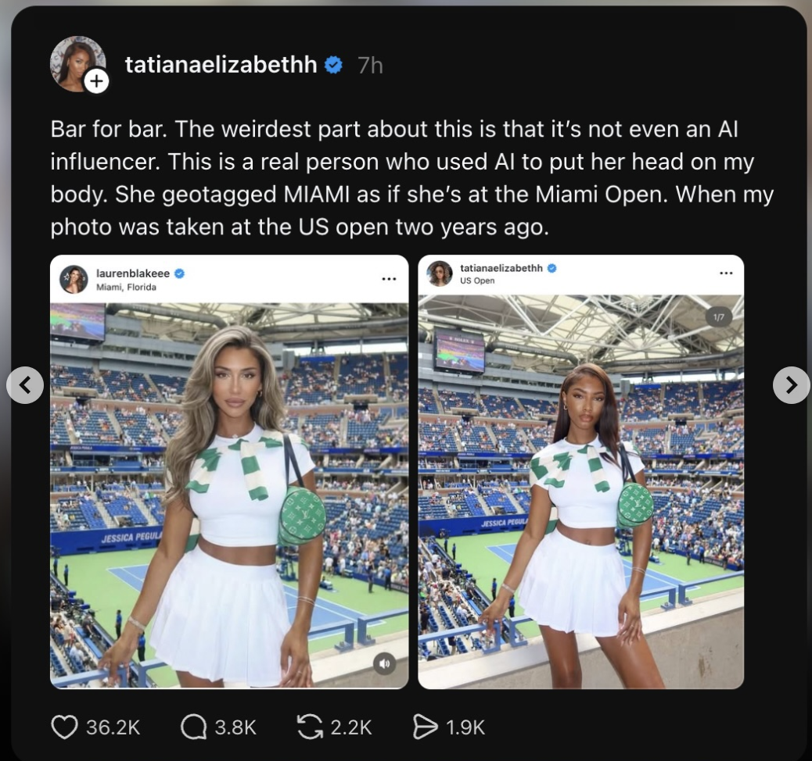
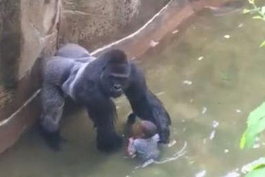
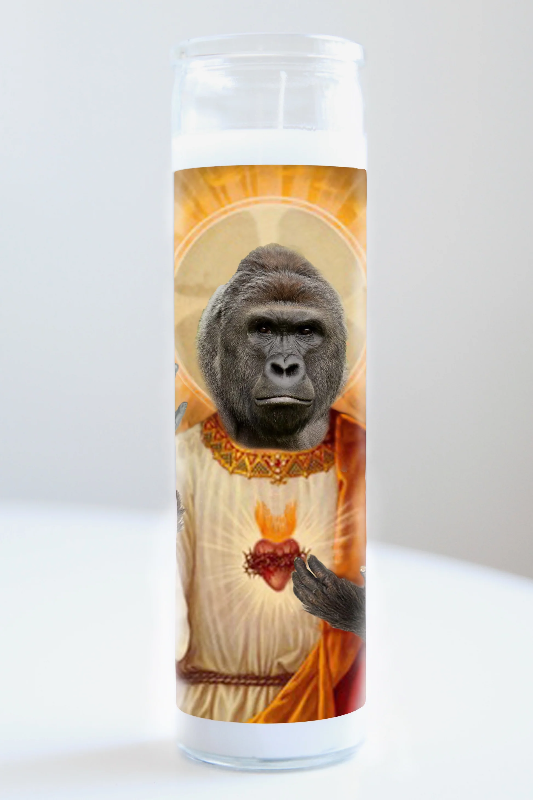
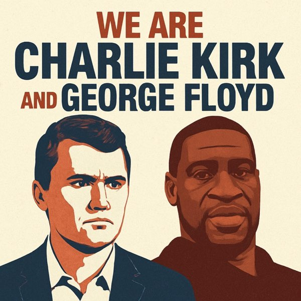
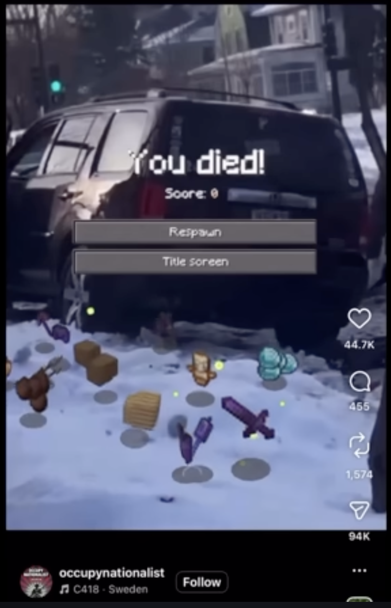

This presentation contains mention of porn and depicts nudity
Outline
Part 1: Deepfakes
What Are Deepfakes
Types & Origins
How Easy Is It?
Degrees of Simulation
Deepfaking Yourself
Applications
Porn & Consent
Part 2: Necromemetics
What Is Necromemetics
Photography & Death
AI & Necromemetics
Can Memes Dilute History
DEEPFAKE @ Peckham Digital


What Are Deepfakes
Deepfakes
A deepfake is a form of digital puppetry: AI-generated synthetic media in which a real person's face, voice, or likeness is used to make them appear to say or do things they never actually did.
Telegram bots generate deepfake nudes on demand. Millions of users.
2017: PhD-level skills required. 2025: download an app. The barrier to creating deepfakes has effectively disappeared.
Degrees of Simulation
Faithful Copy
Distorted Copy

Masking the Absence of Reality
Deepfake of Zelensky "surrendering"
A New Reality
When synthetic media becomes indistinguishable from reality, deepfakes don't just copy the world — they create a new one.
Deepfake Applications
Entertainment
Activism?
Scams
Romance Scams
Crypto Scams
Companionship
Prostitution
Politics, Disinformation & Porn
Memorial Deepfakes

Memorial Deepfakes (Saints Version)
Everyone Is Catfishing
Deepfaking Yourself
When deepfakes become a business model
Influencers
AI clones handle DMs, comments, live chats
Post content while you sleep
Scale to multiple platforms simultaneously
Companies like Forever Voices sell "AI versions" of creators
OnlyFans Creators
AI generates explicit content from their likeness
24/7 content production, no shoots needed
Some creators earn more from their AI clone than themselves
Raises question: who owns the synthetic output?
Actors
Studios license actors' likenesses for AI-generated scenes
Central issue of the 2023 SAG-AFTRA strike
Background actors scanned and replaced by AI
James Earl Jones licensed his voice to AI before his death
Synthetic Influencers
Lil Miquela
2.7M Instagram followers
Brand deals with Prada, Calvin Klein, Samsung
Entirely AI-generated, owned by Brud (now Dapper Labs)
Has "dated", released music, done interviews
The Business Case
Never age, never complain, never demand a raise
Available 24/7 in any language
No scandals, no cancellation risk
Displacing real models and influencers
The question: if the person you follow, buy from, and trust doesn't exist, what does authenticity even mean?
AI Black Face
Stolen Lives

Source: @tatianaelizabethh
The Democratized Lie
Before AI
Catfishing needed Photoshop skills
Or a stolen profile photo, with obvious tells
Limited to low-quality stills
Noticeable if you looked twice
After AI
Anyone generates photorealistic deepfakes in seconds
Full videos, live filters, invented settings
Scaled to everyday posts, not just scams
"I was there" no longer proves anything
When a production studio fits in a phone, every post becomes a potential deepfake, and every life performed online becomes partly, or entirely, synthetic.
Porn & Consent
Porn (Two Party Violation)
Faceswap / Bodyswap
Porn (One Party Violation)
Deepnude
Porn (One Party Violation)
Text Prompt
Generating explicit content of real people via text descriptions
Text Prompt (Waifu)
Generating explicit anime-style content based on real people
Cited facial recognition and state surveillance concerns
iOS Live Photos
Built-in blur tools
Face detection in consumer photo editing
Anti-surveillance thinking reaching billions
Necromemetics
Can Memes Dilute History
Charlie Kirk
Who Was Charlie Kirk?
Founder of Turning Point USA — conservative youth org
Famous for viral campus debate clips challenging liberal students
The Gen Z face of MAGA — built to bridge boomers and young conservatives
Hated by the far-right "gropers" as embarrassing and a sellout
September 10, 2025
Charlie Kirk was shot and killed in front of students in Utah
A man whose prominence came from viral clips — whose death would be instantly played to millions
Bystander "Elder TikTok" — five people away in line — immediately started filming and promoting his Instagram
"Jesus is Lord. Make sure you subscribe to Elder TikTok on Instagram" — while Kirk lay dying
Death as Entertainment & Propaganda
Trump: "Millions of Charlie Kirks were created today"
Flags at half-staff — his death weaponized as state propaganda
The line between mourning and marketing, grief and spectacle, completely dissolved
The Memes
Charlie Kirk
The Agartha Pipeline
Far-right movement experimenting with Nazi occultism as new iconography
Agartha: mythical city at center of hollow earth — only accessible to white people
Kirk gets an "Aarthan makeover" — blonde, blue-eyed, Aryan
Content designed as an algorithmic gateway
You laugh at the face-swap → algorithm feeds you harder content
Irony cannot defeat irony
Three Factions, One Meme
MAGA Boomers
Sincerely share AI slop
Kirk ascending to heaven
Kirk talking to Jesus
Megachurches play these videos
The Gropers
Far-right Gen Z extremists
Hated Kirk as a sellout
Use ironic memes to spread neo-Nazi imagery
Agartha edits, black sun symbols
Leftists
Ironic sharing
Mock the martyr narrative
Dark absurdist humor
Process political trauma
Harambe — Patient Zero
The First Internet Saint


Martin Luther King Jr.
Photography Preserves
Death Frozen Into Symbol
1955
Emmett Till's Open Casket
"I wanted the world to see what they did to my baby" — Mamie Till
1963
Zapruder Film
26 seconds of 8mm film turned JFK's assassination into an infinite loop
2020
George Floyd Video
9 minutes 29 seconds filmed on a phone sparked a global uprising
The image outlives the person. The photograph becomes the story.
What Is Necromemetics
Bodies Into Myths
"We turn people's bodies into myths and narratives that then define social norms."
— Ruby Justice Lo, artist & researcher
We think more about the dead as people who died than as people who lived
Governments use the dead as symbols of legitimacy
Movements turn them into martyrs to rally behind
The person becomes an idea — less about the human, more about the story
Nothing New Under the Sun
Ancient
Pharaohs deified in death
Roman emperor cults
Catholic saint canonization
Modern
Che Guevara on a t-shirt
JFK's eternal flame
Princess Diana iconography
Internet
Harambe's Heaven memes
Robin Williams tributes
Charlie Kirk deepfakes
Deepfakes Escalate Everything
Before vs. After AI
Before AI
Required skill (Photoshop, editing)
Memes were crude and obvious
Limited to static images
Took time and effort
After AI
Zero skill required
Photorealistic video output
Can generate anything
Takes seconds
George Floyd was martyred by the left and defiled by the right. Charlie Kirk was martyred by the right and defiled by the left. Either way, they become ideas — not people.

Sora & Synthetic Resurrection
OpenAI's Sora generates hyper-realistic video from text prompts
Users immediately created offensive deepfakes of the dead
MLK, JFK, Queen Elizabeth II, Stephen Hawking — all turned into digital puppets
OpenAI paused MLK images only after the King estate complained
Everyone else? Still fair game
The dead have no rights to their own image
Sora in Action
AI Video Examples
Who Gets Protection?
"King's estate rightfully raised this with OpenAI, but many deceased individuals don't have well-known and well-resourced estates to represent them. We want to avoid a situation where unless we're very famous, society accepts that after we die there is a free-for-all over how we continue to be represented."
— Henry Ajder, generative AI expert
Protected (if they ask)
MLK (after estate complained)
Famous people with resourced estates
Unprotected
Everyone else
The dead can't opt out
No estate = no recourse
Memes vs. History
How History Works
Built on evidence, context, and debate
Acknowledges complexity and contradiction
Evolves through scholarship over time
The person exists in a specific moment
How Meme Culture Works
Built on virality, emotion, and speed
Flattens everything into a single image or joke
Evolves through remixing in hours
The person becomes an interchangeable symbol
The meme becomes the first encounter — and for many, the only one
Sincerity and satire become indistinguishable — ironic sharing still spreads the image
History becomes a content library; the dead become interchangeable props for engagement

Conclusion
Key Takeaways
Photography gave us the power to preserve the dead
Photoshop gave us the power to manipulate them
AI gives us the power to resurrect them
The dead can't consent, can't opt out, can't sue
The question is no longer whether we mythologize the dead — it's who gets to control the myth.